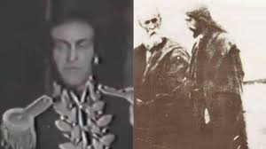

El Cronovisor es un dispositivo que, según se dice, permite ver eventos del pasado. Se cree que fue inventado por el padre Marcello Pellegrino Ernetti y su equipo en la década de 1950.

¿Qué vio el padre Ernetti con el Cronovisor?
Vio desde la fundación del Imperio Romano hasta la destrucción de Sodoma y Gomorra. Observaron no solo la última cena, la crucifixión de Cristo y todos los eventos de Su pasión. También al conquistador francés Napoleón, vio discursos de Mussolini y del filósofo romano Cicerón, y la obra Thyestes del poeta romano Quintus Ennius, hoy perdida.